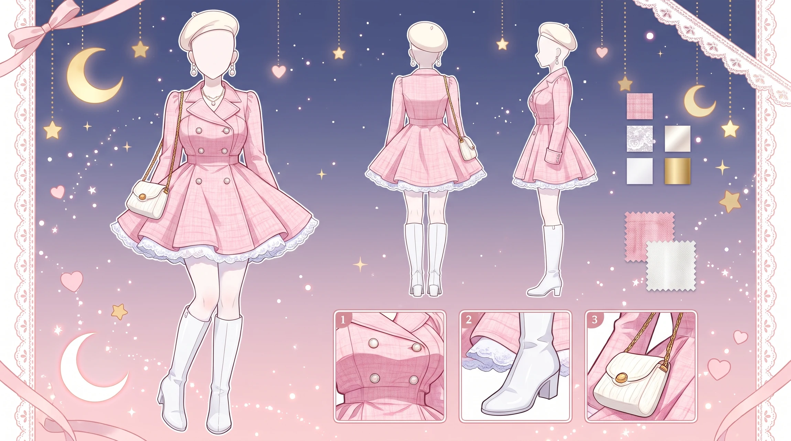
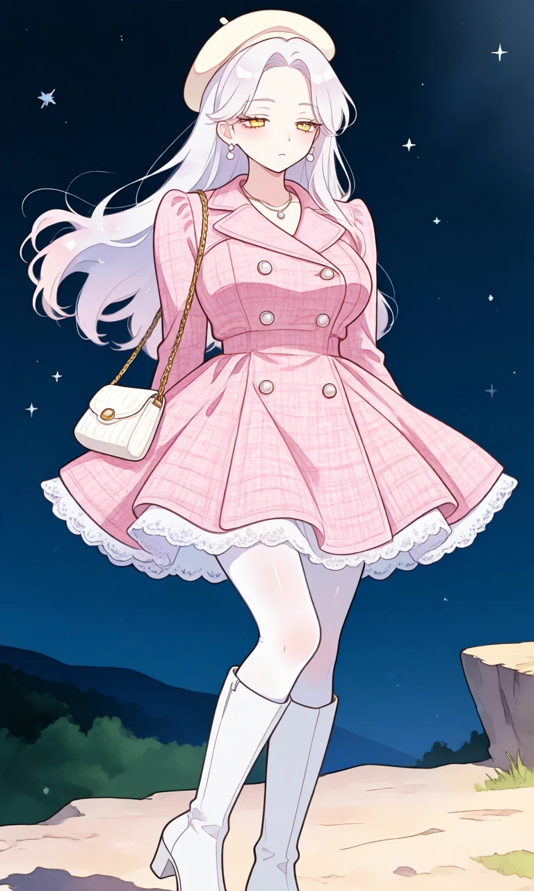
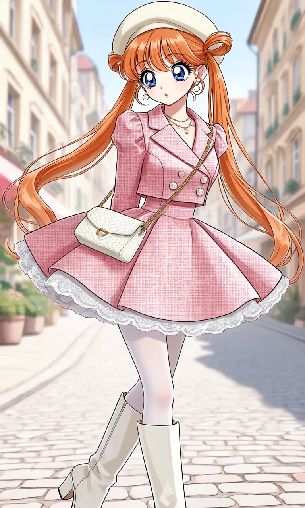

Rosé on the Boulevard

Outfit Prompt
Pink Tweed Coat-Dress is a soft baby-pink, double-breasted coat-dress made from a textured tweed fabric. It features: A structured blazer-style top with notched lapels. Four prominent pearl-like buttons arranged in two rows down the front. Long sleeves with a slightly puffed or tailored shoulder. A cinched waist that flares into a full, playful A-line mini skirt. Delicate white lace ruffle trim along the entire hem, adding a romantic, coquette touch. The dress hits at mid-thigh, creating a flattering, feminine silhouette that combines the formality of a tailored coat with the flirty shortness of a dress. A cream beret sits tilted on her head, giving the outfit a classic French-girl aesthetic. It perfectly complements the soft pink tones. White knee-high boots with a chunky, block heel and a slight platform. They have a clean, minimalist design that elongates the legs and keeps the look fresh and modern. The boots contrast nicely with the pink dress while maintaining a cohesive light color palette. Sheer white tights that give the legs a polished, smooth finish. Delicate pearl drop earrings and a thin layered necklace with a small pendant. A small white knitted crossbody bag with a gold chain strap. The textured weave matches the tweed vibe of the dress.
Outfit Examples



